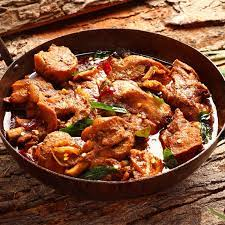

Chicken Curry

This is a delicary that is often used in Indian Homes. A dish to be
enjoyed with friends and family.
Chicken curry is a dish originating from the Indian subcontinent. It is
common in the Indian subcontinent, Southeast Asia, Great Britain, and the
Caribbean. A typical curry from the Indian subcontinent consists of
chicken stewed in an onion- and tomato-based sauce, flavoured with ginger,
garlic, tomato puree, chilli peppers and a variety of spices, often
including turmeric, cumin, coriander, cinnamon, and cardamom. Outside of
South Asia, chicken curry is often made with a pre-made spice mixture
known as curry powder.
- Chicken
- Coconut Milk
- Vegetable
- Curry Powder
- Chilli Pepper
- Onion
- Tomato
- Garlic
- Ginger
- Corriander
- Garam Masala
- Salt
-
Heat 2 tablespoons of oil in heavy bottom pan. When the oil turns
hot,add
- 1 bay leaf
- 2 inch cinnamon piece
- 4 cloves
- 3 green cardamoms
-
Add 1 cup of finely chopped onions and 1 green chili pepper.Saute the
onions till they turn golden. To speed up,use another teaspoon of
oil (optional).
-
Add 1 tablespoon of ginger garlic paste. Make sure the onions turn
golden before adding ginger garlic.
-
Saute ginger garlic for about 2 to 3 minutes or until the raw smell
disappears completely.
-
Add half cup tomatoes(chopped, mashed or pureed). Also add quater
teaspoon turmeric and half teaspoon salt.
-
Next fry until the tomatoes turn completely mushy and the raw smell has
gone.
-
Add 1 teaspoon red chili powder and quater whisked yogurt.To substitute
yogurt, you can soak 12 cashew nuts or almonds or 3 tablespoons white
poppy seeds in half cup hot water for 30 minutes.Blend it smooth paste
and add here.
-
Saute on a medium flame until the mixture becomes thick and begins to
smell good. Optional- if you do not like chunky onions
in your curry, then cool and blend this with water to a smooth puree.
-
Add the following Ingridients
- Half Kg chicken
- 1 teaspoo Garam Masalapowder
- 1 teaspoon coriander powder
- 2 tablespoons chopped coriander leaves or mint leaves.
- Saute for 3 to 4 mins or until the chicken turns pale.
-
Cover and cook on a low flame for about 3 to 4 mins so that chicken
absorbs the flavours. Meanwhile, heat 1 cup water in a separate pot. You
can also microwave the water in a cup for 1 min.
-
Pour half to 3 quaters cup of hot water or as needed. Using cold water
makes the meat tough and hard.
-
Make sure you use just enough water to partially cover the chicken.
Cover and cook on a low to medium heat until soft tender. It took about
10 mins for me. This may vary depending on the age of the chicken or the
size of the pieces. Do not cook on a high temperature.
-
Lastly check whether the chicken is done by pricking it with a fork. It
must be soft and should fall of the bone easily. Taste the curry and add
more salt if needed. Also add quater teaspoon more garam masala if curry
feels low on flavour.
-
When the curry reaches desired consistency switch off the stove. Add
some coriander leaves for garninsh. Keep covered until serving.
- Homepage
- Recipe - 2
- Recipe - 3
- Recipe - 4